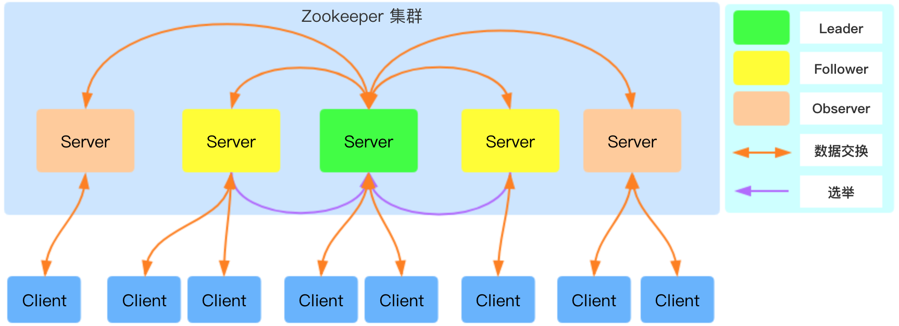
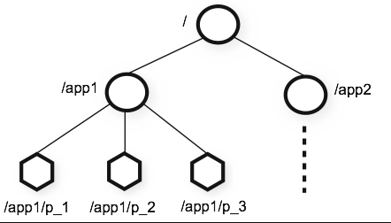

Ch01-Zookeeper 介绍
April 1, 2018
Apache ZooKeeper 是由 Apache Hadoop 的子项目发展而来，于 2010 年 11 月正式成为了 Apache 的顶级项目。ZooKeeper 是一个正式源代码的分布式协调服务，由知名互联网公司雅虎创建，是 Google Chubby 的开源实现。
ZooKpeer 是一个典型的分布式数据一致性的解决方案，分布式应用程序可以基于它实现诸如数据发布/订阅、负载均衡、命名服务、分布式协调/通知、集群管理、Master 选举、分布式锁和分布式队列等功能。
1. 基本信息 #
| 条目 | 说明 |
|---|---|
| 官网 | https://zookeeper.apache.org/ |
| 下载地址 | https://zookeeper.apache.org/releases.html |
2. 架构介绍 #
2.1 相关角色 #

ZooKeeper 集群中包含 Leader、Follower 以及 Observer 三个角色，每个节点只能是其中的某一个角色。
| 角色 | 说明 |
|---|---|
| Leader | 负责进行投票的发起和决议，更新系统状态，Leader 是由选举产生。 |
| Follower | 用于接受客户端请求并向客户端返回结果，在选主过程中参与投票。 |
| Observer | 可以接受客户端连接，接受读写请求，写请求转发给 Leader。但 Observer 不参加投票过程，只同步 Leader 的状态，Observer 的目的是为了扩展系统，提高读取速度。 |
2.2 服务状态 #
ZooKeeper 的每个节点在某个时间段会处于某个指定状态，目前常见的有下述 4 种状态。
| 状态 | 说明 |
|---|---|
| Looking | 寻找 Leader 状态。当服务器处于该状态时，它会认为集群中没有 Leader，因此需要进入 Leader 选举流程 |
| Following | 跟随者状态，表明当前服务器角色是 Follower。Follower 与 Leader 处于数据同步阶段 |
| Leading | 领导者状态，表明当前服务器角色是 Leader。前集群中有一个 Leader 为主进程 |
| Observing | 观察者状态，表明当前服务器角色是 Observer。 |
2.3 数据模型 #
Zookeeper 通过一个共享的、树型结构的名字空间来进行相互协调。这个命名空间由若干个 ZNode 组成。

ZNode 可以分为持久节点(PERSISTENT)和临时节点(EPHEMERAL)。
- 持久节点是指一旦这个 ZNode 被创建了，除非主动进行 ZNode 的移除操作，否则 ZNode 将一直保存在 ZooKeeper 上。
- 临时节点的生命周期会和客户端会话绑定，一旦客户端会话失效，那么这个客户端创建的临时节点就会被移除。
- 如果给持久节点和临时节点加上顺序特性，又可以形成持久顺序节点和临时顺序节点。
3. 机制介绍 #
3.1 事务 #
在 ZooKeeper 中，事务是指能够改变 ZooKeeper 服务器状态的操作，我们也称为事务操作和更新操作，一般包括数据节点创建与删除、数据节点内容更新和客户端会话失效操作等。 对于每一个事务请求，ZooKeeper 都会为其分配一个全局唯一的事务 ID，用 ZXID 表示，每一个 ZXID 对应一次更新操作，从这些 ZXID 中可以间接地识别出 ZooKeeper 处理这些更新操作请求的全局顺序。
3.2 状态信息 #
每个数据节点除了存储了数据内容之外，还存储了数据节点本身的一些状态信息。使用 get 命令便可以查看。
| 状态属性 | 说明 |
|---|---|
| czxid | 即 Created ZXID，表示该数据节点被创建时的事务 ID |
| mzxid | 即 Modified ZXID，表示该节点最后一次被更新时的事务 ID |
| ctime | 即 Created Time，表示节点被创建的时候 |
| mtime | 即 Modified Time，表示该节点最后一次被更新的时间 |
| version | 数据节点的版本号 |
| cversion | 子节点的版本号 |
| aversion | 节点的 ACL 版本号 |
| ephemeralOwner | 创建该临时节点的会话的 sessionID。如果该节点是持久节点，那么这个属性值为 0。 |
| dataLength | 数据内容的长度 |
| numChildren | 当前节点的子节点个数 |
| pzxid | 表示该节点的子节点列表最后一次被修改时的事务 ID。注意，只有子节点列表变更了才会变更 pzxid，子节点内容变更不会影响 pzxid |
3.3 版本机制 #
每个 ZNode 节点都有三种类型的版本信息，对数据的任何操作都会引起版本的变化。不过这里要注意，虽然称为版本，但是叫做次数可能更加符合实际用途，它表示的是 数据内容，子节点，ACL 信息的修改次数。
| 版本类型 | 说明 |
|---|---|
| version | 当前数据节点数据内容的版本号 |
| cversion | 当前数据节点子节点的版本号 |
| aversion | 当前数据节点 ACL 变更版本号 |
3.4 Watcher 机制 #
ZooKeeper 提供了分布式数据的发布/订阅功能，Watcher 机制则完成了分布式通知功能。它允许客户端向服务器端注册一个 Watcher 监听，当服务端的一些指定事件触发了这个 Watcher，那么就会向指定客户端发送一个事件通知，这样就实现了分布式的通知功能。